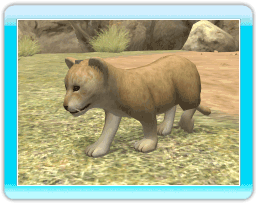

|
 |
Lorsque vous avez élevé un petit pendant plusieurs jours, il part dans une autre animalerie pour quelque temps.
Après un certain nombre de jours, il en revient adulte.
Au bout de quelques jours, le caractère de votre animal change en fonction de votre comportement à son égard. Par exemple, selon la fréquence à laquelle vous le nourrissez, le caressez ou l'appelez.
Son caractère influence la vitesse à laquelle les caractéristiques Appétit et Énergie diminuent, et a également un effet sur ses agissements.
●Sauvage
L'animal n'en fait qu'à sa tête.
Les caractéristiques Appétit et Énergie diminuent à un rythme normal.
●Désobéissant
L'animal devient de plus en plus actif.
Comme il se dépense davantage, son énergie diminue plus vite.
●Obéissant
L'animal se déplace parfois, mais se repose aussi.
Son énergie décroît plus vite lorsque vous jouez avec lui.
●Gourmand
Un animal gourmand ne bouge pas beaucoup mais a plus souvent faim, de sorte que sa caractéristique Appétit diminue plus vite.
●Espiègle
L'animal devient de plus en plus
actif.
Les caractéristiques Appétit et Énergie augmentent et diminuent à un rythme légèrement plus rapide.
●Facile
L'animal passe beaucoup de temps à se prélasser.
Les caractéristiques Appétit et Énergie diminuent donc plus lentement.
●Gourmet
L'animal devient beaucoup moins
actif.
Sa caractéristique Appétit diminue encore plus vite que celle d'un animal gourmand.
Les caractéristiques Appétit et Énergie augmentent et diminuent à un rythme légèrement plus rapide.
●Têtu
L'animal
devient de plus en plus actif.
Les caractéristiques Appétit et Énergie augmentent et diminuent à un rythme normal.
●Gâté
L'animal n'en fait qu'à sa tête.
Comme il veut toujours jouer, sa caractéristique Énergie augmente et diminue plus rapidement.